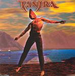

| Artist: | Tantra |
| Title: | Terra |
| Label: | self produced |
| Length(s): | 60 minutes |
| Year(s) of release: | 2003 |
| Month of review: | [05/2003] |
| 1) | Kali | 8.30 |
| 2) | The Sensible Road | 3.40 |
| 3) | Edge Of Oblivion | 12.13 |
| 4) | Solitude | 5.30 |
| 5) | Terra | 9.50 |
| 6) | Return | 4.40 |
| 7) | Drowning Dawn | 3.10 |
| 8) | Scorpio | 3.50 |
| 9) | Vertigo | 5.40 |
| 10) | Burlesque Theatre | 5.50 |
| 11) | Zephyrus II | 2.30 |
The Sensible Road opens with friendly acoustic guitar, the continuation has its darker sides, with shiveringly sung vocals, the bass singing low and varied keyboard sounds. Edge Of Oblivion is the longest track on the album, and has an orchestral opening, a string orchestra mind you, with synth cello and violin sounds playing a sonorous melody. The vocalist sings in a way similar to the previous track: shivering, and as if alone. In the melodic chorus, he sings in a more tormented fashion. Then the guitar rings out for the first goosebumps sequence, especially the chorus in the back seems to be the deciding factor here. Choir like vocals are also present on this track, which like the previous tracks, although very symphonic is also quite dark. In fact, Tantra has the tendency to include many mood building keyboard intermezzo's into the songs. After such a passage we break into something almost reggae like with scat like vocals. Weird, and not what I would call beautiful. And to then break into a symphonic keyboard solo is also not very typical. Okay, we move back to the more up-beat part, with dancing keyboards and the bass prominently below. As such we may alternate back and forth a bit until we end up in a still lake of keyboards and female voiceless singing. At the end the shaky vocals return, with its emotinal outbursts.
Solitude opens with a low male chorus, and then departs in a somewhat bluesy Floydian fashion with strong guitar leads. The guitar work is really very strong here. The ELPish keyboards run through, and although the pace goes up a bit, the music stays quite dark. The more Oldfieldian guitar work later on, with that certain vibrancy, is maybe a tad too melodic, but the first part of this track is a strong one. The second part is much friendlier and easy-going, with guitar and piano doing the melodic leads, and the keyboards inserting an occasional solo, not easy on the ears that one.
The title track is the final one of the longer tracks, opening with church organ. The wavery vocals return on this track. Too bad I can not understand the vocals, because they might indicate a relation between the tracks in which the vocalist sings in this fashion. The open guitar work then takes over, all in all, it seems to me a bit too much is happening here, or to put it more precise, the cohesion between the various bits seems a bit lost. The parts in themselves are okay, but a string of them makes less sense than it should. This is especially apparent in the more complex parts where various short runs alternate, lightly grasping into each other. This is less so in a later part where the bands takes it a bit easier again, composition wise. More time to develop the ideas, more chances for the listener to grab a hold.
Return opens in the dark fashion we have now growned accustomed to, but the main line of the song is around a bouncy tune, playing frolicly on the keyboards. The guitar sound is a bit whiney, and has the harshness of a jazzrock guitar. All kinds of bleeps and zweeps force themselves in among the more straightforward elements. Essentially, the song contains one good steady melodic part, the remainder is a kind of playing around on the part of the band, it seems to me. At times, the music can be quite harrowing. Drowning Dawn is a rather gentle song by comparison, stately with its march rhythm and fluting keyboards. Think of Prokoviev here. The vocal part is watery sounding. Then the guitar starts to shred in manical fashion. The bouncy vocal part that follows ends rather abruptly and moves us into the piano of Scorpio. The louder tones here have a bit of distortion, but that may be my headphones acting up. The song operates within a lush symphonic style, at times the sound spectrum gets to be really full with a lot of things happening at the same time. As turns out to be usual with Tantra in this day and age, there is something spooky and scary about the affair. It certainly avoids the listener from getting bored.
Vertigo combines a disjoint choir with dark sounds on the keyboards. It turns out to be a rather catchy track in most places, but not without some mood making intermezzo's. Burlesque Theatre has percussive piano and a sharp guitar sound to make for a low tempo but still quite remarkable instrumental track. In fact, there are not many vocals to be heard in the final part of this album at all. Zephyrus II is the rather instrumental short conclusion to the album.